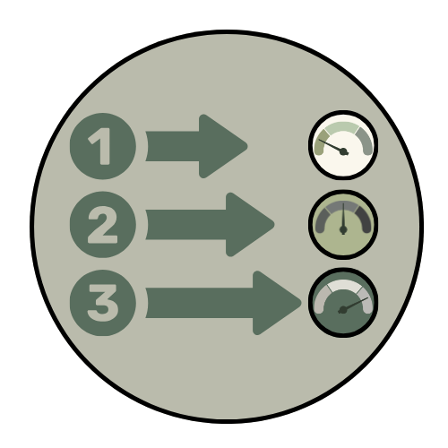

Supply Planning Intro
The guidance below is designed to help you review your supply list with intention and clarity. Supplies support your lessons throughout the year, and thoughtful planning can help you budget wisely without overbuying.
About the Supplies
Review the supply list and the information below carefully before making purchases. The supply list is divided into two parts: basic supplies and subject supplies.
- • Basic supplies are used in three or more subjects, so most Alveary members will need those items.
- • Subject supplies are used specifically in the subject listed in that heading (art, science, etc.). You’ll only need those supplies if you included that subject in your schedule.
Tip: Members tend to be overly optimistic about how much they can accomplish at the beginning of the year. Remember: you can always add subjects (and their supplies) down the road. The supply lists stay on your Alveary dashboard all year, so it’s easy to access and order items later. Supplies are also found in the beginning of each lesson plan.
Note: Any household supplies needed are listed in the lesson plans by term in the “planning and prep” section. Household supplies are extremely common supplies that can be found quickly in most homes and classrooms such as a cup, towel, coin, etc.

About the List
- 1. RATIONALE: Read the rationale to understand how a supply will be used.
Tip: Make sure there isn’t a reasonable substitute already in your home or classroom.
- 2. SCOPE: Pay attention to how often a supply is used and in what term. This can help you prioritize which supplies to purchase first.
Tip: Make a note now on your calendar to revisit the supply list before second and third term. While it may seem easier to buy at once at the beginning of the year, buying per term can save money as you have a more realistic view of what will be accomplished.
- 3. QUANTITY: Note how many students can share a supply.
Tip: Don’t overbuy shared supplies. It’s easy to buy another of that item later if you find that it would be helpful for everyone to have their own.
- 4. USED IN: Note the “used in” column to see what subjects that supply will be used. Some supplies appear under more than one subject, but you will only need one of that item unless otherwise noted.
- 5. OPTIONAL: Pay special attention to the “optional” and “group” tags. Optional items will be listed together at the bottom of each section. Group means you only need one per family or classroom.
Tip: Most optional items can be purchased later once you have a better feel for that subject and your needs. These are items that are nice to have, but not necessary for doing that subject.

Prioritize
- • Make note of any supplies where you have an acceptable version on hand, but the “upgraded” version on the list would be nice to have.
- • Prioritize quality when it will impact the outcome. The quality of watercolor paint and brushes matters more than the quality of more utilitarian supplies.
- • Use the space below to make priority notes as you carefully read over the supply list. You can use these notes later to come back and “upgrade” or make gift lists.
Tip: These items often make good holiday gifts or gifts from grandparents.
If you need suggestions for good alternatives or places to trim the supply budget, the Alveary Hive is a great place to gather suggestions from experienced members. Of course, you can always reach out to the Alveary team as well.
